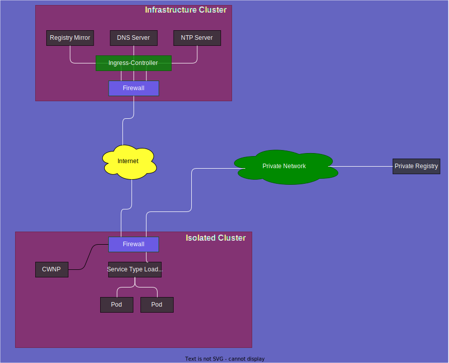

Isolated Kubernetes Clusters
- Isolated Kubernetes Clusters
Some customers have the need to run their workloads in a very restricted environment. These restrictions are driven by regulatory requirements in some industries such as finance, healthcare, energy and more. Regulatory requirements often mandate that the workload must not be exposed to the public internet, nor is capable to reach the public internet in any case.
For this purpose we implemented a possibility to start Kubernetes clusters in such a manner. This is referred to as cluster isolation.
Design Choices
When talking about highly secure Kubernetes environments people often raise the term "Air Gapped Cluster". This would mean that no physical connection exists between the Kubernetes control plane and the Kubernetes worker nodes with the outside world. This requirement exists in extreme environments such as ships, moon bases or nuclear plants. The effort to produce this in a completely automated manner is extremely challenging.
We decided to follow a different approach which is more practical, still very secure but much simpler to implement and operate. The solution we created is called "Isolated Cluster" which means that there are still physical connections between the Kubernetes cluster, but guarded to prohibit malicious traffic. It is also not possible to enable malicious traffic by accident, e.g. if a cluster user configures network policies or load balancers to untrusted environments.
Network Design
In order to be able to restrict ingress and egress internet traffic, but still make it possible to create a working Kubernetes cluster we implemented the following network design.
- All strictly required container images are mirrored to a registry which is only accessible from the Kubernetes clusters.
- DNS and NTP servers are produced alongside the registry.
- The
containerdconfiguration on every worker node is configured to pull all of the strictly required container images from this private registry mirror. - DNS and NTP configuration is also adopted to use the DNS and NTP servers on this private environment.
- A list of networks which are allowed to reach is managed, this list reflects the networks of the cloud provider and is not modifiable by the cluster user. This list usually contains the internet prefixes of the provider and one or more RFC address ranges.

Users are advised to attach an additional network to the Kubernetes cluster in order to be able to pull container images for the application workloads from private registries.
Strictly Required Container Images
In general the creation of a Kubernetes cluster requires the ability to pull container images for several applications which are necessary to make a machine a Kubernetes worker node. To mention the most important:
- Kubelet: the main controller on each worker node to manage the workload
- CNI (Container Network Interface): controller and daemon set to setup and run the container networking
- CSI (Container Storage Interface): controller and daemon set to setup and run the container storage
- CoreDNS: DNS for containers
- MetalLB: Service Type LoadBalancer Implementation
- node-exporter and metrics-server: Monitoring for the worker node
- Metal-Stack Addons: for firewall and auditing events
Flavors
With the introduction of Isolated Kubernetes Clusters, cluster users must decide upon cluster creation which type of isolation he needs for his workload. There are three different flavours available:
- Internet access
baseline: This is the default cluster creation mode, which does not change any aspects of network and registry access. - Internet access
forbidden: No internet access is possible, neither ingress nor egress. - Internet access
restricted: No internet access is possible, neither ingress nor egress, but can be enabled by the cluster user.
Please see the detailed description of these flavors below.
Cluster Wide Network Policies CWNP
To restrict which egress traffic is allowed, Custom Resources ClusterWideNetworkPolicy are deployed and can be deployed by the cluster user. The set of deployed CWNPs differs between baseline and forbidden/restricted.
baseline CWNPs:
| Rule Name | Destination | Purpose |
|---|---|---|
| allow-to-http | 0.0.0.0/0 | egress via http |
| allow-to-https | 0.0.0.0/0 | egress via https |
| allow-to-apiserver | IP of the Kubernetes API Server on the control plane | API Server communication of kubelet and other controllers |
| allow-to-dns | IP of the Google DNS Servers | DNS resolution from the Kubernetes worker nodes and containers |
| allow-to-ntp | IP of the Cloudflare NTP Servers | Time synchronization |
| allow-to-storage | network of the container storage | persistent volumes with the cni driver |
| allow-to-vpn | IP of the vpn endpoint on the control plane | allow communication from the api server to the kubelet for container logs and container exec |
forbidden and restricted CWNPs:
| Rule Name | Destination | Purpose |
|---|---|---|
| allow-to-apiserver | IP of the Kubernetes API Server on the control plane | API Server communication of kubelet and other controllers |
| allow-to-dns | IP of the private DNS Server | DNS resolution from the Kubernetes worker nodes and containers |
| allow-to-ntp | IP of the private NTP Server | Time synchronization |
| allow-to-registry | IP of the private Registry Mirror | Pulling strictly required container images |
| allow-to-storage | network of the container storage | persistent volumes with the cni driver |
| allow-to-vpn | IP of the vpn endpoint on the control plane | allow communication from the api server to the kubelet for container logs and container exec |
All of these CWNPs are managed by the gardener-extension-provider-metal, every manual modification will be reverted immediately.
Internet Access Baseline
This is the default configuration of a Kubernetes cluster, egress traffic is controlled by multiple CWNPs (ClusterWideNetworkPolicy), ingress traffic is possible by deploying a Service Type LoadBalancer. The cluster user can add additional CWNPs without any restrictions and is responsible for them.
Container images can be pulled from any reachable container registry. The containerd is not reconfigured to point to our private registry mirror.
DNS and NTP are configured to internet DNS resolvers and NTP servers.
Internet Access Forbidden
This configuration can only be achieved by creating a new Kubernetes cluster, it is not possible to modify a existing cluster (with internet access baseline or restricted) to this configuration. It is also required to specify the most recent version of Kubernetes, older versions of Kubernetes are not supported.
Every network access modification triggered by a cluster user, either by adding or modifying CWNPs or adding a Service Type LoadBalancer, is validated against the list of allowed networks.
containerd is configured so that all required images are pulled from the private registry mirror. This registry contains only the strictly required images, therefore no additional (workload) images can be pulled from public registries.
Egress traffic
Egress traffic is only allowed to the private registry mirror and the DNS and NTP servers. Additional CWNPs can be added to reach destinations in the internal networks if specified. If a CWNP was created which points to a destination outside of the allowed networks, the CWNP will still be present but stays in the status ignored.
> kubectl get clusterwidenetworkpolicies.metal-stack.io
NAME STATUS MESSAGE
allow-to-apiserver deployed
allow-to-dns deployed
allow-to-ntp deployed
allow-to-registry deployed
allow-to-storage deployed
allow-to-vpn deployed
allow-to-google ignored ingress/egress does not match allowed networksAlso an event is created which describes why the CWNP was ignored:
> kubectl get events
5s Warning ForbiddenCIDR clusterwidenetworkpolicy/allow-to-google address:"8.8.8.8/32" is outside of the allowed network range:"10.0.0.0/8,100.64.0.0/10,212.34.83.0/27", ignoringIngress traffic
Ingress traffic is only allowed from the internal networks if specified. To specify the address where the Service Type LoadBalancer is listening to, the cluster user must use one of his statically acquired ip addresses. Of course, this ip address is only considered if it is contained in the list of allowed networks. Then this ip address must be configured in the service:
apiVersion: v1
kind: Service
spec:
type: LoadBalancer
loadBalancerIP: 10.1.1.1 # ip from the internal networkBy default, no ip address will be automatically selected for such clusters and the ip of the service will stay in pending mode until the ip was specified as shown above.
> kubectl get svc
NAME TYPE CLUSTER-IP EXTERNAL-IP PORT(S) AGE
example-service LoadBalancer 10.244.75.171 <pending> 443:32179/TCP 4s
> kubectl get events
8s Warning AllocationFailed service/example-service Failed to allocate IP for "default/example-service": no available IPs
3s Warning SyncLoadBalancerFailed service/example-service Error syncing load balancer: failed to ensure load balancer: no default network for ip acquisition specified, acquire an ip for your cluster's project and specify it directly in "spec.loadBalancerIP"Internet Access Restricted
This configuration can only be achieved by creating a new Kubernetes cluster, it is not possible to modify a existing cluster (with internet access baseline or forbidden) to this configuration. It is also required to specify the most recent version of Kubernetes, older versions of Kubernetes are not supported.
The same default CWNPs are deployed and the container images are pulled from the private registry. Also DNS and NTP are configured to use the private DNS and NTP servers. The only difference to the forbidden mode is that CWNPs and Service Type LoadBalancers can be created without the restriction that only allowed networks are allowed.
Pulling container images is theoretically possible if a cluster user creates a CWNP which allows network access to an external registry. But most container registries serve the container images from large CDN networks, which have a lot of ip addresses. Simply adding the ip address of docker.io is therefore not sufficient.
Application Container Images
In order to deploy application containers into a cluster with Internet Access forbidden a private registry must be provided. This private registry must be located in the list of allowed networks. The DNS name of the registry must resolve in the public DNS servers. The registry must be secured with a TLS certificate that is also valid with the CA certificates from the worker node, e.g. vanilla debian ca-certificates.
Implementation
To achieve this functionality modifications have been implemented in various components in metal-stack, this includes:
Gardener Extension Provider Metal
The ControlPlane API is adopted to enable a user to configure a shoot with the internet access type forbidden or restricted. The CloudProfile can now be extended to carry the list of allowed networks, the dns and ntp servers, the registry with the mirrored registries.
ControlPlane:
// ControlPlaneConfig contains configuration settings for the control plane.
type ControlPlaneConfig struct {
metav1.TypeMeta
// NetworkAccessType defines how the cluster can reach external networks.
// +optional
NetworkAccessType *NetworkAccessType
}
type (
// NetworkAccessType defines how a cluster is capable of accessing external networks
NetworkAccessType string
)
const (
// NetworkAccessBaseline allows the cluster to access external networks in a baseline manner
NetworkAccessBaseline = NetworkAccessType("baseline")
// NetworkAccessRestricted access to external networks is by default restricted to registries, dns and ntp to partition only destinations.
// Therefore registries, dns and ntp destinations must be specified in the cloud-profile accordingly.
// If this is not the case, restricting the access must not be possible.
// Image overrides for all images which are required to create such a shoot, must be specified. No other images are provided in the given registry.
// customers can define own rules to access external networks as in the baseline.
// Service type LoadBalancers are also not restricted.
NetworkAccessRestricted = NetworkAccessType("restricted")
// NetworkAccessForbidden in this configuration a customer can no longer create rules to access external networks.
// which are outside of a given list of allowed networks. This is enforced by the firewall.
// Service type LoadBalancers are also not possible to open a service ip which is not in the list of allowed networks.
// This is also enforced by the firewall.
NetworkAccessForbidden = NetworkAccessType("forbidden")
)A sample Shoot Spec:
---
apiVersion: core.gardener.cloud/v1beta1
kind: Shoot
metadata:
name: isolated
namespace: sample
spec:
provider:
type: metal
controlPlaneConfig:
networkAccessType: forbidden
...CloudProfile:
type NetworkIsolation struct {
// AllowedNetworks is a list of networks which are allowed to connect in restricted or forbidden NetworkIsolated clusters.
AllowedNetworks AllowedNetworks
// DNSServers
DNSServers []string
// NTPServers
NTPServers []string
// The registry which serves the images required to create a shoot.
RegistryMirrors []RegistryMirror
}
// AllowedNetworks is a list of networks which are allowed to connect in restricted or forbidden NetworkIsolated clusters.
type AllowedNetworks struct {
// Ingress defines a list of networks which are allowed for incoming traffic like service type LoadBalancer
// to allow all you must specify 0.0.0.0/0 or ::/0
Ingress []string
// Egress defines a list of networks which are allowed for outgoing traffic
// to allow all you must specify 0.0.0.0/0 or ::/0
Egress []string
}
type RegistryMirror struct {
// Name describes this server
Name string
// Endpoint is typically the url of the registry in the form https://hostname
Endpoint string
// IP is the ipv4 or ipv6 address of this server
IP string
// Port at which port the service is reachable
Port int32
// This Registry Mirror mirrors the following registries
MirrorOf []string
}A sample configuration in the CloudProfile would look like:
network-isolation:
allowedNetworks:
egress:
- 1.2.3.0/24 # Internet CIDR of the Provider
- 100.64.0.0/10
- 10.0.0.0/8
ingress:
- 100.64.0.0/10
dnsServers:
- "1.2.3.1"
- "1.2.3.2"
- "1.2.3.3"
ntpServers:
- "1.2.3.1"
- "1.2.3.2"
- "1.2.3.3"
registryMirrors:
- name: test registry
endpoint: https://some.private.registry
ip: "1.2.3.4"
port: 443
mirrorOf:
- "docker.io"
- "quay.io"
- "eu.gcr.io"
- "ghcr.io"
- "registry.k8s.io"The GEPM generates machine classes for the MCM that contain the NTP and DNS configuration for the machine. The machine-controller-manager-provider-metal implements machine creation containing these properties through the metal-api.
OS Metal Extension
Based on the configuration of a cluster the configuration of the containerd must be changed to pull images from the private registry mirror.
If a cluster is either configured with restricted or forbidden and for every registry mirror an additional certs.d/$HOST/hosts.yaml will be created. This is in line with Gardener's containerd Registry Configuration.
# certs.d/docker.io/hosts.yaml
server = "https://docker.io"
[host."https://some.private.registry"]
capabilities = ["pull", "resolve"]Firewall Controller Manager and Firewall Controller
The Firewall Controller Manager has extended the FirewallSpec to configure the Firewall Controller which must enforce the restrictions regarding allowed networks.
// FirewallSpec defines parameters for the firewall creation along with configuration for the firewall-controller.
type FirewallSpec struct {
// AllowedNetworks defines which networks are allowed to connect to, and allow incoming traffic from.
// Is enforced with NetworkAccessForbidden.
// The node network is always allowed.
AllowedNetworks AllowedNetworks `json:"allowedNetworks,omitempty"`
}
// AllowedNetworks is a list of networks which are allowed to connect when NetworkAccessType is NetworkAccessForbidden.
type AllowedNetworks struct {
// Ingress defines a list of cidrs which are allowed for incoming traffic like service type LoadBalancer
Ingress []string `json:"ingress,omitempty"`
// Egress defines a list of cidrs which are allowed for outgoing traffic
Egress []string `json:"egress,omitempty"`
}Also the ClusterwideNetworkPolicy in the Firewall Controller was changed to show the deployment status of a CWNP.
type ClusterwideNetworkPolicy struct {
metav1.TypeMeta `json:",inline"`
metav1.ObjectMeta `json:"metadata,omitempty"`
Spec PolicySpec `json:"spec,omitempty"`
Status PolicyStatus `json:"status,omitempty"`
}
// PolicyDeploymentState describes the state of a CWNP deployment
type PolicyDeploymentState string
const (
// PolicyDeploymentStateDeployed the CWNP was deployed to a native nftable rule
PolicyDeploymentStateDeployed = PolicyDeploymentState("deployed")
// PolicyDeploymentStateIgnored the CWNP was not deployed to a native nftable rule because it is outside of the allowed networks
PolicyDeploymentStateIgnored = PolicyDeploymentState("ignored")
)
// PolicyStatus defines the observed state for CWNP resource
type PolicyStatus struct {
// FQDNState stores mapping from FQDN rules to nftables sets used for a firewall rule.
// Key is either MatchName or MatchPattern
// +optional
FQDNState FQDNState `json:"fqdn_state,omitempty"`
// State of the CWNP, can be either deployed or ignored
State PolicyDeploymentState `json:"state"`
// Message describe why the state changed
Message string `json:"message,omitempty"`
}Cloud Controller Manager
This component was adopted to allow to be started without a default network specified. This was actually always the internet network and if no ip address was specified in the Service Type LoadBalancer, one ip was allocated from this default network. For isolated clusters this is not provided and a cluster user must always specify this ip to get a working load balancer.
OCI Mirror
The OCI Mirror is a new application which acts as a scheduled job that pulls a given list of container images and pushes them to a private registry (which will then serve as the private registry mirror). The detailed description can be read on the project website.